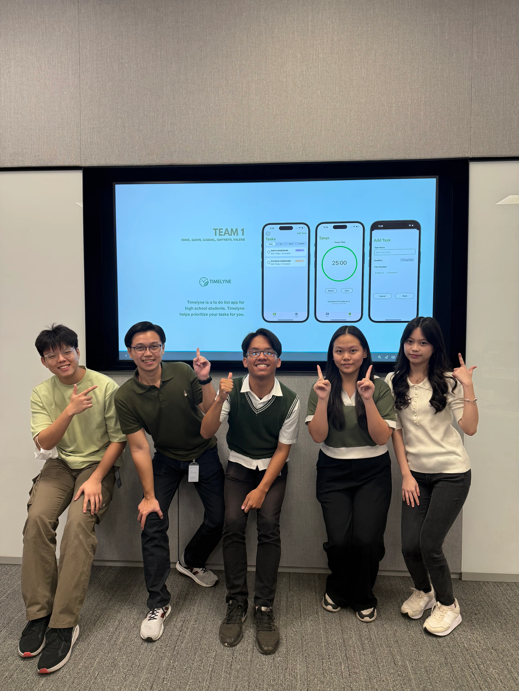
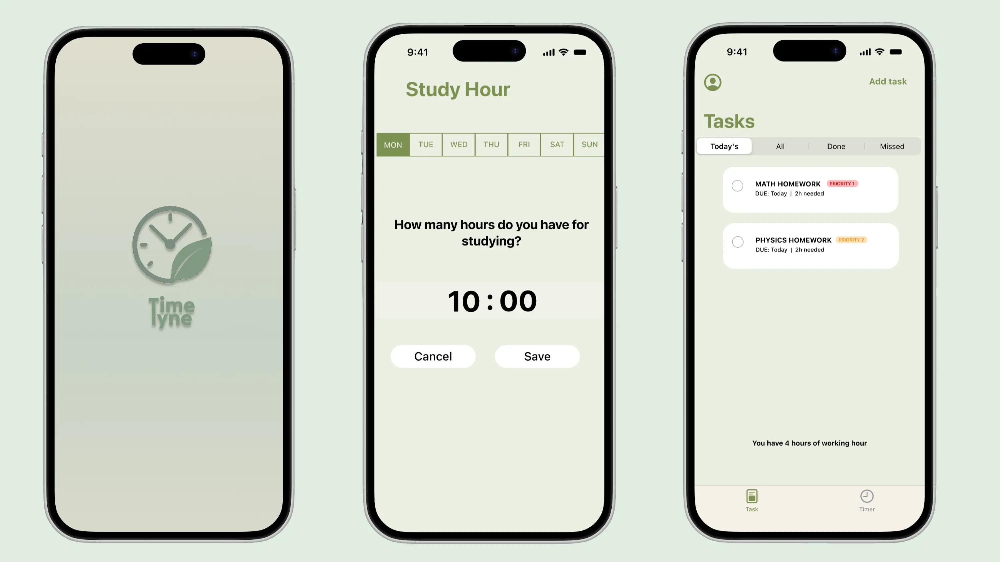
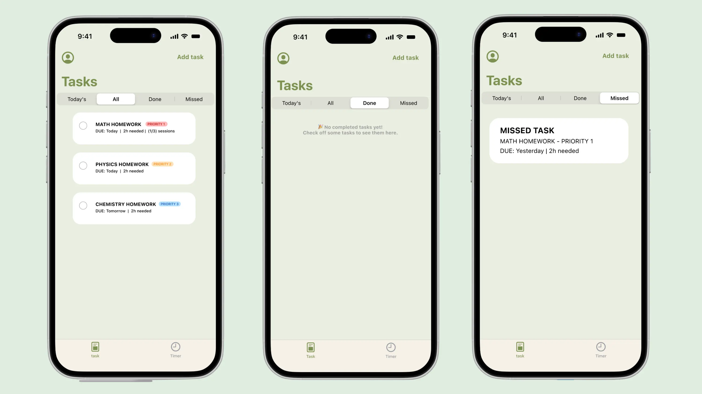
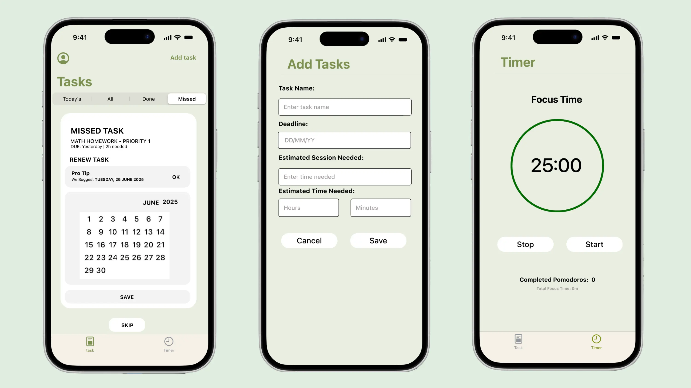
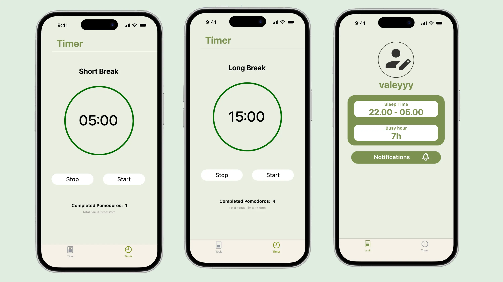
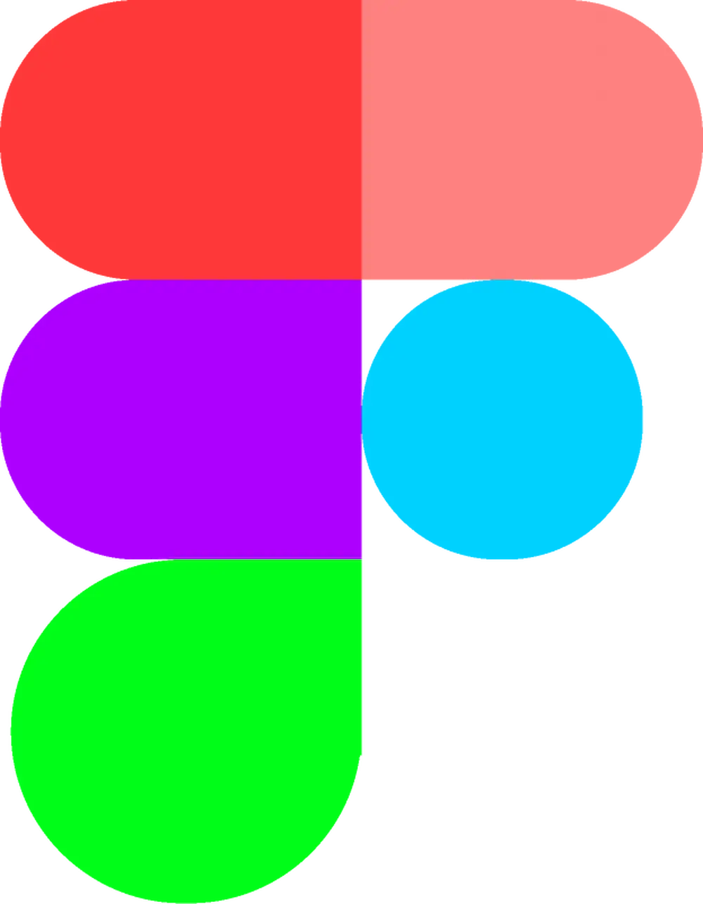
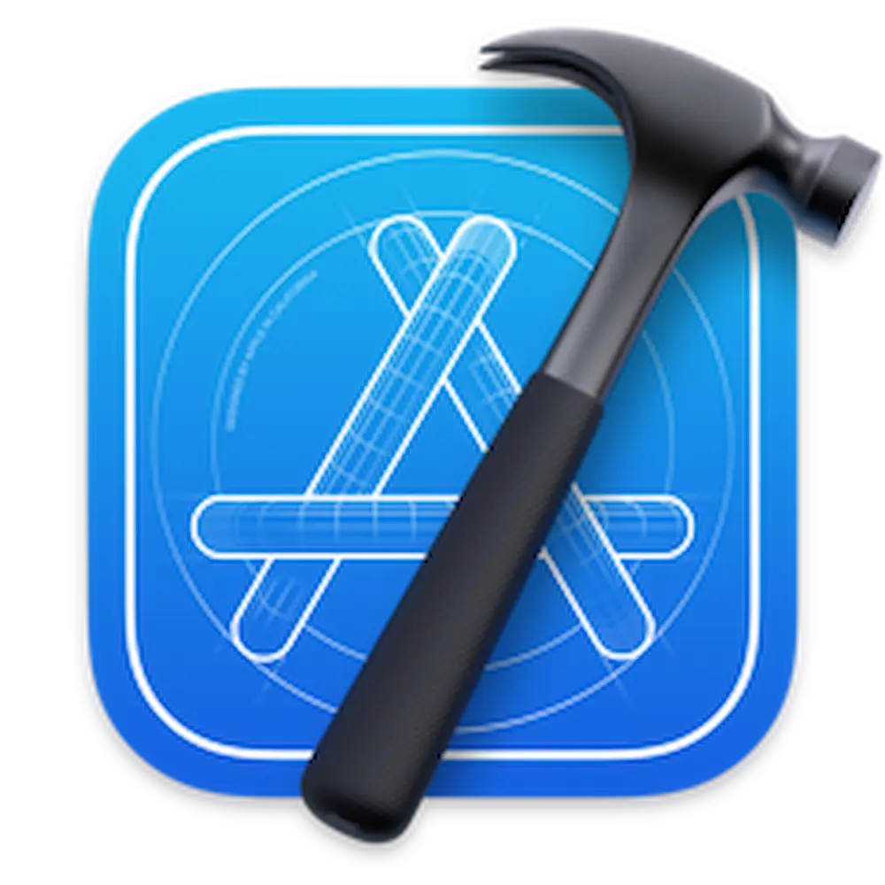

Timelyne is a student productivity app designed to help users
manage study schedules, assignments, and focus sessions in a
more organized and efficient way. The app allows students to
create and categorize tasks, monitor completed and missed
assignments, and arrange study hours through weekly scheduling
features. Users can also estimate study durations for each task,
making it easier to plan workloads based on available time and
academic priorities.
To support concentration and healthier study routines, Timelyne
integrates a Pomodoro-based timer system with focus sessions,
short breaks, and long breaks that guide users through
structured study cycles. By combining all of these features into
one platform, Timelyne helps students build more consistent
study habits and manage their academic responsibilities more
effectively.




Tools Used

Figma — UI design & Prototype
Xcode — App development & testing